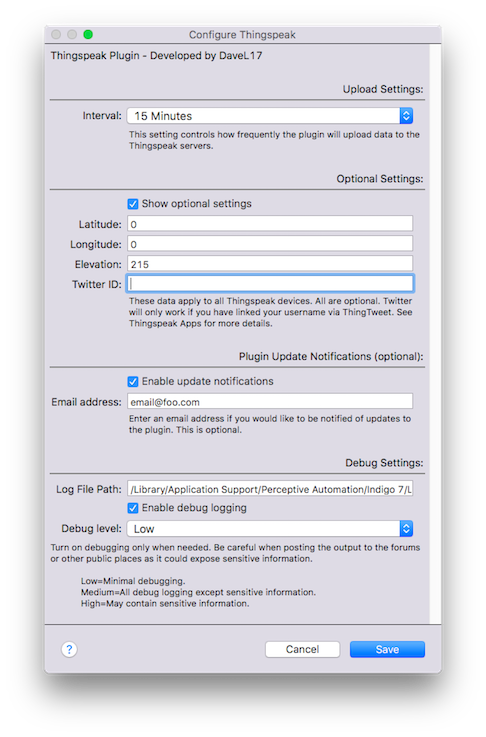
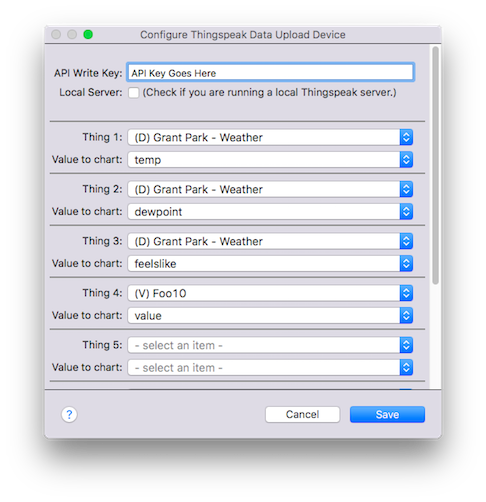
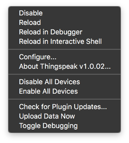

The Thingspeak plugin allows users to create Indigo Home Control Server devices which provide a facility to upload Indigo data to Thingspeak for charting and other purposes.
Individual devices contain up to eight data elements for upload.
Installation

Installing the Thingspeak Plugin is accomplished in the same way that you would install other Indigo plugins. There are no additional steps or other Python packages that
need to be installed. From the computer where the Indigo Server resides (you can’t directly install plugins from a client machine), download the current plugin archive
from the Indigo File Library and then double-click on the archive file. Indigo will prompt you to install the plugin. Once the plugin has been successfully installed,
you will need to configure the plugin to work with your desired implementation. During installation, Indigo should present you with the Plugin Configuration dialog. If
for some reason that doesn’t happen, or if you want to make additional changes later, you can always get to the Plugin Configuration dialog by going to the Indigo main
menu and selecting Plugins —> Thingspeak —>
All settings that affect the plugin’s overall operations are found in the Plugin Configuration dialog. The settings are divided into four sections: Upload Settings,
Location Settings, Plugin Update Notification Settings, and Debug Settings.
Upload Settings — Thingspeak Upload Settings control the frequency with which the plugin interacts with the Thingspeak system. There is only one plugin
timing setting: Upload Interval. The Upload interval setting controls how often each Thingspeak Plugin device will reach out to the Thingspeak servers to upload data. This
setting affects all devices that you create (all devices upload at the same frequency.) The options range from every 15 seconds to once per day (15 seconds is the minimum
allowed by Thingspeak.)
Location Settings (optional) — The plugin location settings contain information regarding the latitude, longitude and elevation of your Indigo network.
These settings are entirely optional and can be left blank. You can also choose to populate some and not others (although it would be weird to set latitude and not longitude I
suppose.) They are provided because it is possible to upload this information to your Thingspeak channels should you choose to do so. The settings here will pertain to
all of your Thingspeak devices. Latitude and Longitude are decimal values, and the sign of each number is important. A wrong sign here could accidentally put you on the
other side of the world. The elevation value is an whole number integer and is measured in meters (and can also be negative.)
Update Notifications (optional) — The plugin update notification settings tell the plugin to alert you when a new version of the plugin is available. To
enable notifications, check the appropriate box and enter a valid email address. This facility also requires that the user enable Indigo’s facility to send and receive email
messages. The plugin does not send messages on its own or collect any information about usage. All personal information is stored on the user’s machine.
Debugging — If things aren’t working the way that you expect them to, turning on the debugging facility within the plugin can help us isolate the cause,
and the output is tremendously useful when reporting bugs. There are three levels of debug logging—Low, Medium and High. Selecting Low, provides a minimal amount of debug logging
(might still be a lot, really.) Medium provides for a pretty massive amount of logging (but keeps all sensitive data like API Write Keys from being displayed.) A
setting of High will allow this sensitive information to be logged, so use with care when posting log results to a public place.
That’s the extent of the settings that affect the overall operation of the plugin. But we’re still not done setting up our Thingspeak Plugin implementation. Now we must
create devices that will manage the data that we want to upload.
Devices

Thingspeak Plugin Devices are where most of the magic happens. Users begin by creating a new device within Indigo. There is only one device model available—Thingspeak
Data Upload Device—and each device requires an API Write Key which is obtained from the user’s Thingspeak account. Each Thingspeak channel has its own API Write Key.
Each Thingspeak Device can contain up to 8 data elements for upload (a limitation imposed by Thingspeak, not by the plugin.) Data elements are added in the following
few steps:
Enter the corresponding API Write key in the appropriate box (you obtain these from Thingspeak.)
For the first “Thing” to be tracked, select the drop-down box to select the corresponding Indigo Device or Indigo Variable that you would like to track. Indigo
Devices are preceded by (D) and Variables are preceded by a (V).
Tic the “Show Settings” checkbox, and click the “Refresh” button. This will load all corresponding device states for Indigo Devices or a Variable value option
that you have just selected. Select the data appropriate element that you want to track.
Proceed on to the next “Thing” or click Save.
When you’re done adding Things, give your new Thingspeak device a name and then exit the Edit Device dialog box.
After the plugin has had a chance to cycle and upload your data, several custom device states will be populated with select information. The data that appears in the
custom device states is based on the communication with the Thingspeak servers and represents the data that Thingspeak received from you. In other words, this is the
information as in appears on the Thingspeak servers. The data include the channel ID, the timestamp of the record, and the entry ID. Note that although status appears
in the custom device states window, it is not presently supported by the plugin.
Actions
There is one Indigo Action Item to request an upload of data on request. This option can be used as a part of an Indigo Trigger like: “If X happens, upload my data
now.”
Upload Data Now
Menu Items

There are three custom menu items for the Thingspeak plugin:
Check for Plugin Updates — Selecting this option will test whether there is an available update to the Thingspeak plugin. This option doesn’t require
you to have an email account configured in Indigo (it will notify you in the Indigo log instead.)
Upload Data Now — This will cause the plugin to initiate a refresh cycle outside the scheduled update. This will not be successful if the last update
was less than 15 seconds ago. This is a (completely reasonable) time limit imposed by Thingspeak—not imposed by the plugin.
Toggle Debugging — This will toggle the debug option at whatever level is currently set in the plugin configuration dialog. If debug is on, selecting
this option will turn it off (and vice versa.)
Framework
The framework of the entire environment as it relates to Indigo is very straightforward. Indigo talks through the plugin to the Thingspeak servers to allow users to
upload data from their Indigo installations to the Thingspeak data network. Communication is bi-directional (but only slightly), and presently happens through routine
calls using common Python communication protocols. Plugin users choose a predefined upload interval through a standard plugin configuration setting, the plugin reaches
out to the Thingspeak servers and uploads data, and Thingspeak responds with a message denoting success (or lack thereof.) This plugin is designed to work with Indigo
6.0 and above and is therefore compatible with Python 2.6. I will do my best to account for other implementations where possible, but sometimes I will not be able to do
that when it would cause a loss of functionality or break existing frameworks. I will also work to continue to keep the plugin current as Indigo, its Python
implementation and Thingspeak API evolve over time.